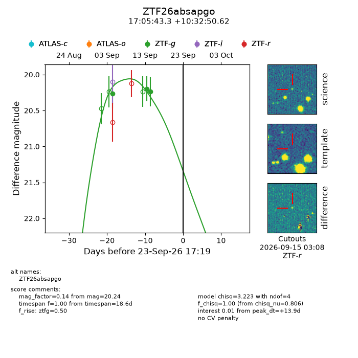
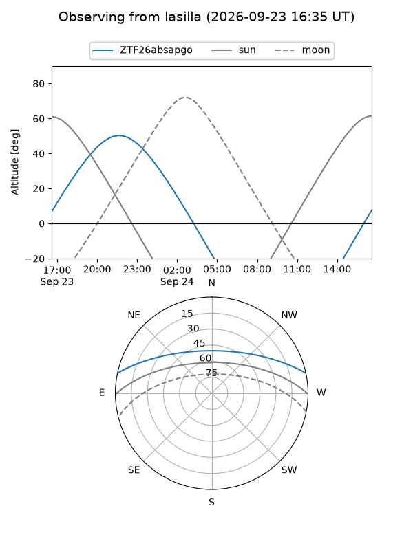
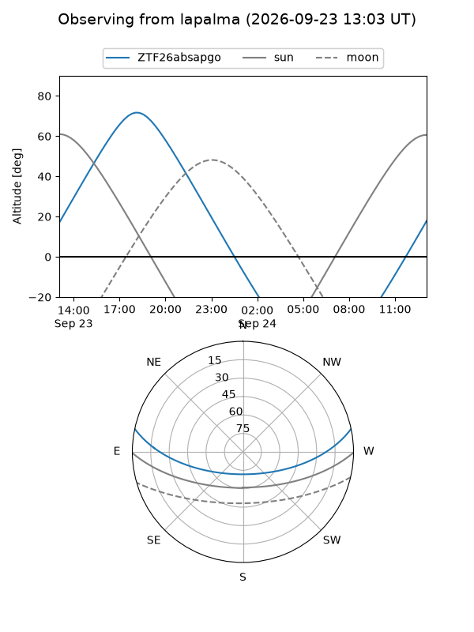
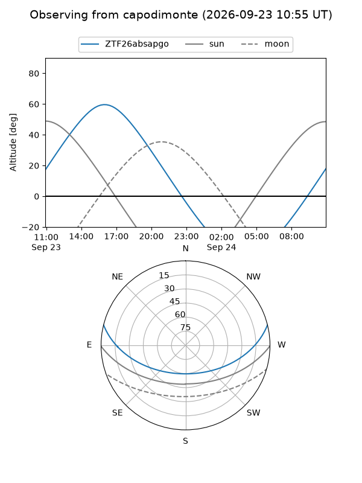
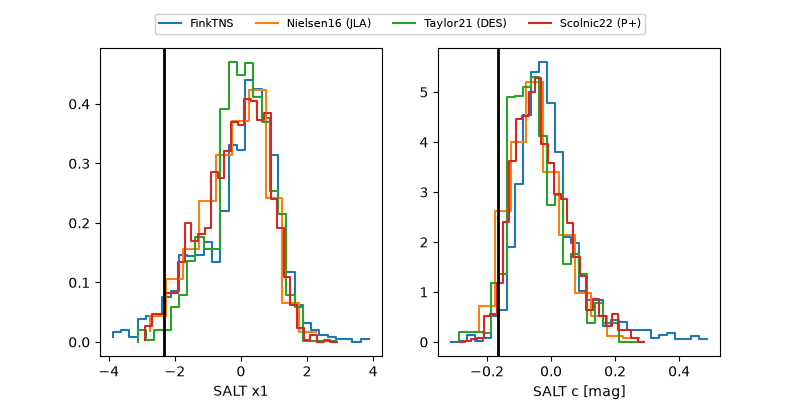

ZTF26absapgo
Target ZTF26absapgo at 2026-09-24 04:36
Aliases and brokers:
FINK-ZTF: ztf.fink-portal.org/ZTF26absapgo
Lasair-ZTF: lasair-ztf.lsst.ac.uk/objects/ZTF26absapgo
ALeRCE-ZTF: alerce.online/object/ZTF26absapgo
Direct TNS query: direct search
alt names
ZTF26absapgo (ztf,fink_ztf)
Coordinates:
equatorial (ra, dec) = 256.4306,+10.54739
equatorial (HMS+DMS) = 17:05:43.34,+10:32:50.62
galactic (l, b) = (30.5505,+28.22249)
Flags:
peak dt: +14.4
Photometry:
last ztfg=20.24
3 ztfg detections
Lightcurve

Visibility



Additional plots
